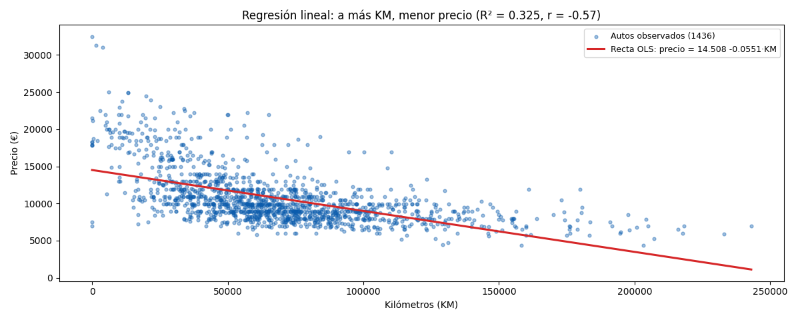
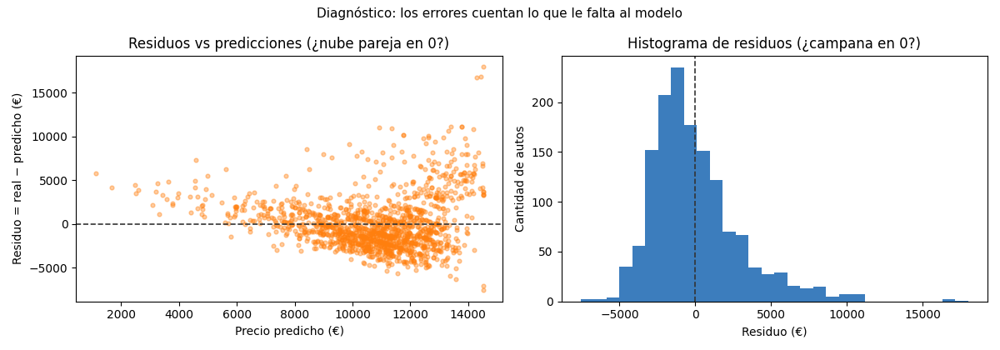
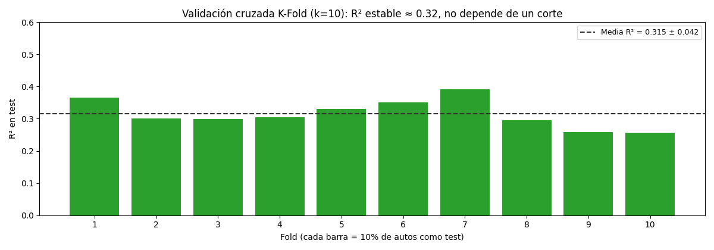

Unidad 6 · Regresión lineal simple y múltiple · Lección 0003
Regresión lineal: la recta que explica el precio por KM
Win de hoy: ajustar Price ~ KM con
OLS,
leer su ecuación, testear la hipótesis del kilometraje, medir
R²
y los residuos,
y validar con K-Fold k=10.
Réplica por partes del análisis OLS de ejemplo (Parte 2, versión simple).
1 · La pregunta, la hipótesis y el gráfico de dispersión
Una hipótesis es una idea que se plantea para explicar un fenómeno y que se intenta comprobar o rechazar mediante experimentación u otros métodos. En regresión siempre jugamos con dos:
- Hipótesis nula (H₀). Es la que el investigador trata de refutar, rechazar o anular. Acá: “el kilometraje no guarda relación con el precio” (la pendiente es cero). Es el “no pasa nada” por defecto.
- Hipótesis alternativa (H₁). Es la que el investigador realmente piensa que causa el fenómeno. Acá: “el kilometraje sí guarda relación con el precio” (la pendiente es distinta de cero, y esperamos que sea negativa).
Antes de creerle a ningún número hay que mirar la dispersión de los datos: cada auto es un punto en el plano precio–kilómetro. Si la nube baja hacia la derecha, H₁ tiene chances; si es una nube redonda sin dirección, H₀ sobrevive. En Toyota la nube baja: correlación r = −0,57.

Price vs KM (1436 autos) con la recta
OLS:
precio ≈ 14.508 − 0,0551 × KM. Cada 10.000 km restan ≈ 551 €.
R² = 0,325, r = −0,57.import pandas as pd
from sklearn.linear_model import LinearRegression
df = pd.read_csv("../ToyotaCorolla.csv") # desde lessons/
X, y = df[["KM"]], df["Price"]
m = LinearRegression().fit(X, y)
print(m.intercept_, m.coef_) # 14508.14 [-0.0551]
print(m.score(X, y)) # 0.3249 (R² en entrenamiento)
print(df["Price"].corr(df["KM"])) # -0.572 · Qué es el análisis de regresión (y su ecuación)
El análisis de regresión busca relaciones significativas entre variables. Busca predecir el valor de una variable dado el valor de otra. Más formal: es una medida estadística que intenta determinar la fuerza de la relación entre una variable dependiente y una serie de valores cambiantes o variables independientes. Predice el valor de la dependiente a partir de los valores de las independientes. En estadística incluye diversas técnicas para el modelado y el análisis de diversas variables, cuando el foco está en la relación entre la dependiente y una o más independientes.
La regresión lineal es una recta que busca describir el comportamiento de los puntos en el plano (estos puntos pueden ser precio–kilómetro). Su ecuación poblacional es:
Price = β₀ + β₁ · KM + ε
- β₀ (intercepto): la base. Estimado ≈ 14.508 €: lo que valdría un Corolla con 0 km según la recta (extrapolación, ningún auto tiene 0 km reales salvo los
KM=1sospechosos). - β₁ (pendiente): el efecto. Estimada ≈ −0,0551 €/km (≈ −551 € cada 10.000 km). Negativa, como pedía H₁.
- ε (variable de error): todo lo que la recta no captura (desviación, varianza, estado de conservación, apuro del vendedor, equipamiento). Cada auto tiene su propio ε = real − predicho, que luego llamaremos residuo.
El método OLS elige β₀ y β₁
minimizando la suma de errores al cuadrado. Con statsmodels se ve el boletín completo (el mismo patrón del
análisis de ejemplo):
import statsmodels.api as sm
d = df[["Price", "KM"]].dropna()
res = sm.OLS(d["Price"], sm.add_constant(d["KM"])).fit()
print(res.summary())
# const 14508.1 | KM -0.0551 | P>|t| = 0.000 en ambas
# R-squared 0.325 | F 690.0, Prob(F) 1.8e-124Lectura de la tabla para H₀: la columna P>|t| del KM vale 0,000.
Eso significa que si H₀ fuera cierta (pendiente cero), ver una pendiente tan extrema como −0,0551 sería casi imposible.
Rechazamos H₀ y nos quedamos con H₁: la edad en kilómetros sí guarda relación con el precio. El
test F = 690 con probabilidad
≈ 0 dice lo mismo a nivel modelo.
3 · Las 3 partes que importan tras correr la regresión
Tras ejecutar el algoritmo hay tres lecturas obligatorias. En ese orden:
3.1 · R²: qué porción explica la recta
El R² dice qué tan bien ajustan los puntos vs la regresión. Más alto, mejor… hasta cierto punto. Nuestro modelo simple da R² = 0,325: explica el 32,5 % de las diferencias de precio; el 67,5 % queda en el error (edad, peso, equipamiento, ruido). El modelo múltiple del análisis de ejemplo llega a 0,741 porque suma esas variables.
Reglas de pulgar de la pizarra (no leyes físicas): el rango de valores “cómodos” está entre 0,65 y 0,95 (según la pizarra, entre 0,7 y 0,98). Si R² = 1, el modelo es determinista (predice perfecto: sospechá). Si es 0, la regresión casi no explica la variabilidad de la respuesta. Pero ojo con los matices:
- ¿Los R² bajos son un problema? No necesariamente. Pueden ser buenos modelos por numerosas razones: comportamientos humanos (psicología, sociología) son ruidosos por naturaleza, y si las variables independientes son estadísticamente significativas todavía se pueden extraer conclusiones sobre las relaciones. Nuestro 0,325 con pendiente ultra-significativa es exactamente ese caso: modesto pero real.
- ¿Los R² altos son siempre buenos? No. En el análisis de residuales pueden aparecer patrones no deseados (sesgo por falta de variables independientes significativas) u overfitting (el modelo se ajusta a peculiaridades aleatorias de la muestra). Todos los modelos tienden al overfitting; lo grave es pasarse.
- Limitaciones del R²: no dice si los coeficientes estimados y las predicciones tienen sesgo; no dice si el modelo ajusta bien a los datos (un buen modelo puede tener R² bajo y viceversa). Por eso nunca se lee solo: se lee con residuos y validación.
3.2 · Residuos y RSS: qué tan grandes son los errores
Los residuos son la diferencia entre cada valor observado y el predicho por el modelo, auto por auto. La RSS (residual sum of squares) es la suma de esos errores al cuadrado: es lo que OLS minimiza y mide la dispersión no explicada. Acá RSS ≈ 12.744.882.944 (12,7 mil millones de €²; las unidades al cuadrado suenan raras, por eso en la práctica se reporta su raíz como RMSE ≈ 2.973 €).

Cómo leerla: la recta que se ajuste bien tendrá residuos pequeños, centrados en cero, sin forma rara. Acá hay dos avisos: el abanico (más dispersión a la derecha = heterocedasticidad) y la cola derecha del histograma. Ambos gritan “te faltan variables”: exactamente lo que la versión múltiple (R² 0,741) corrige.
pred = m.predict(X); resid = y.values - pred
print((resid**2).sum()) # RSS ≈ 12744882943.7
print((resid**2).mean()**0.5) # RMSE ≈ 2979.5 (en muestra)3.3 · Error de generalización: K-Fold k=10
Hay que dividir el dataset en K-Fold = 10 y evaluar desde allí el análisis. La idea: parto los 1436 autos en 10 pliegues (≈ 144 autos cada uno), entreno en 9 y pruebo en el restante, roto 10 veces y comparo los valores entre las diferentes ejecuciones. Si el R² salta mucho entre folds, el modelo es inestable; si es parejo, es creíble.

from sklearn.model_selection import KFold, cross_val_score
import numpy as np
kf = KFold(n_splits=10, shuffle=True, random_state=42)
r2 = cross_val_score(m, X, y, cv=kf, scoring="r2")
print(np.round(r2, 3))
# [0.366 0.301 0.299 0.305 0.33 0.35 0.391 0.296 0.258 0.256]
print(r2.mean().round(3), r2.std().round(3)) # 0.315 0.0424 · Quiz (auto-chequeo inmediato)
5 · Fuente primaria y cierre
Para profundizar (1 fuente): James, Witten, Hastie & Tibshirani,
An Introduction to Statistical Learning — capítulos 3 (regresión lineal: ecuación,
OLS, R², tests de hipótesis) y 5 (remuestreo y
validación cruzada). Texto base del programa
(statlearning.com, PDF libre; también en
RESOURCES.md del índice). La sintaxis exacta de LinearRegression,
KFold y cross_val_score sale de la
documentación de scikit-learn, y el summary() con
P>|t|, AIC/BIC de la
documentación de statsmodels.
¿Algo no quedó claro? Preguntame al agente: qué parte de la ecuación, del R², de los residuos o del K-Fold te cuesta, o cómo pasar de esta recta simple al modelo múltiple (R² 0,741) del análisis de ejemplo. Esa pregunta vale más que releer.